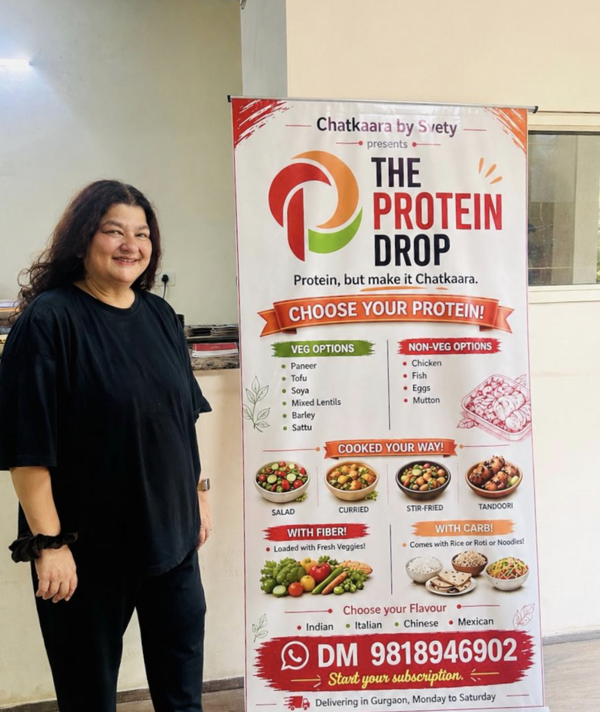

ABOUT TPD
The Protein Drop isn’t a meal plan.
It is food made with love and care that is high in protein.
Thoughtfully made, in small batches, for people who care about what they eat but don’t always have the time to make it themselves.
Pre-order only. Available in Gurgaon for now.

FROM THE COOK
My name is Svety.
I love cooking, eating, most of all, feeding people. Some of my happiest memories have food at their centre.
I have been a corporate and now, am an entrepreneur. I will always be a Bihari. You will find a lot of my ethnicity in the food I bring to you.
While the name of these dishes may be things you have tried earlier, they will not be the same. They are inspired. I can’t not leave some bit of my emotions, my love, my joy in your food.
I’ve also been overweight for most of my life. The world tells us these two things cannot comfortably coexist. If you’re overweight, you’re expected to have a complicated relationship with food—one defined by guilt, restraint and regret. We’re taught to speak of food in numbers and negotiations.
Good food is indulgence. Healthy food is sacrifice. Pleasure comes with apology.
The Protein Drop is deeply personal because it comes from that place.
Because life is busy. Because we’re all trying to do better—for our bodies, our health, our families. And because somewhere along the way, healthy food became joyless and delicious food became sinful.
I refuse to choose.
THE PROTEIN PROMISE
Every meal is
✓ Freshly Cooked. No Preservatives
✓ Small Batch
✓ High Protein
✓ Home Kitchen